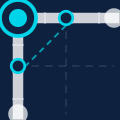

Lisa
Digital Workplace Concierge
Connecting to Lisa...
Lisa is unavailable
Lisa could not be reached. Please check your connection or contact IT support.
Ready when you are
Tap the orb to start talking
Transcript